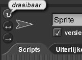
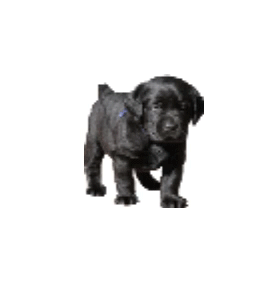
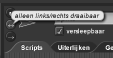
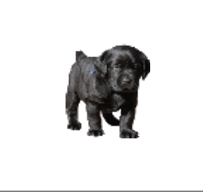
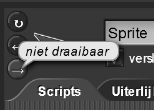
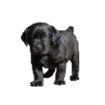

Op maat maken en debuggen
Op deze pagina ga je de woordenlijsten aanpassen die sprites gebruiken en je gaat problemen debuggen.
- Open je H1L2-Kletspraat project. Pas deze drie functieblokken aan om de zinnen die het programma
gebruikt te veranderen. Zie de uitleg hieronder. Wees creatief en grappig, maar blijf wel aardig.


Hoe kun je een blok aanpassen
- Vind het blok in het werkblad of de gekleurde paletten aan de linkerkant.
- Ctrl-klik (of klik met de rechtermuisknop) op het blok en kies 'bewerken...'
- Verander de code in het blok (Instructies hiervoor staan in het blok.)
- Klik op OK als je klaar bent (Of klik op Annuleren als je niets wilt veranderen.)
Het proces van het testen van een aanpassing, het vinden van problemen en het oplossen van die problemen noemen we debuggen .
- Zorg ervoor dat je programma goed werkt. Test elk blok en ook het hele programma. Als iets niet goed werkt, ga dan niet verder voordat je het probleem hebt opgelost. Het is nu een goed moment om je werk om te slaan.
- Zorg dat de sprites pas kletsen als je op hen klikt.
- Verander de achtergrond van het speelveld.
- Verander de uiterlijken naar iets wat je leuk vindt. Je kunt een foto of plaatje van het internet
halen door het plaatje naar het uiterlijk-werkveld van jouw sprite te slepen.
Plaatjes aanpassen
- Als het plaatje dat je gekozen hebt te groot is, stel de grootte dan in op minder dan 100% met behulp van .
-
Je wilt misschien ook de draaistijl van je sprite aanpassen. Dit
doe je met de knoppen in de linkerbovenhoek van je werkveld.
   
 